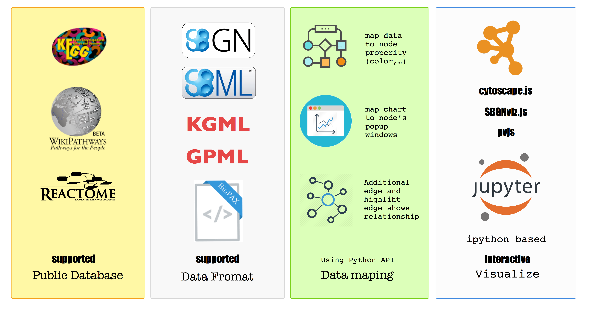
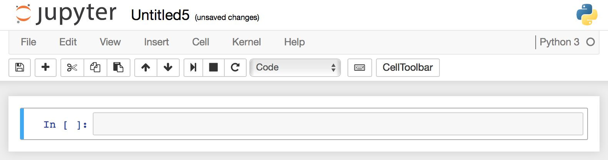
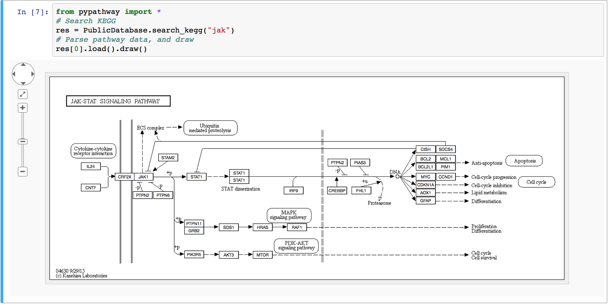

Welcome to pypathway
PyPathway is a package for python users who play with biology pathways, powered by Web technology and ipython nootebook(jupyter). In tradictional environment, rendered pathway graphic will be displayed in a browser.
Usage
- Search and retrieve pathway from Reactome, WikiPathway and KEGG.
- Parse
BioPAX,SBGN-ML,KGMLandGPMLformat pathway file. - Python API for highly custom biology data mapping.
- Interactive visualization data via
IPythonnotebook.

Installation
Note
This section assumes that you, like most Python users, have Python, pip, IPython and Jupyter installed, if not, view this FULL install guide
For most of users, we suggest you install via pip, if you are interested in the developing function, install it from Github
pip install pypathway
- BioPAX visualization need additional Paxtool commandline tool:
# osx
brew install homebrew/science/paxtools
- For windows users, view Java setup guide to set up the command for application’s usage.
Try it out
1. Load IPython notebook
Most of situation we suggest you use IPython notebook to handle pathway data. This Web base interactive code environment provide richer content while rendering pathway.
Open IPython notebook by typing jupyter notebook in terminal(linux and osx), CMD, or powershell.
Example: in macOS 10.11, terminal. which will open IPython notebook a page in default browser

Note
Using Chrome, Firefox or Safari to run IPython notebook.
2. create a new notebook
On the right top, click New -> Python3(Python2) to create a new notebook.

You will see a notebook page like this. Than enjoy your time with IPython notebook.

This IPython notebook shows searching and drawing pathway related with jak in IPython notebook, no data mapping API is used
3. Search and retrieve pathway
- Use
PublicDatabase’ssearch_keggstaticmethod to SearchKEGGdatabase. - Use load() method to retrieve and parse pathway from
KEGG - Use draw() method to render pathway.
4. Code and result

Features
Pathway Search and Retrieve
Supported database
KEGG: Kyoto Encyclopedia of Genes and GenomesReactome: a free, open-source, curated and peer reviewed pathway database.WikiPathway: WikiPathways is an open, public platform dedicated to the curation of biological pathways by and for the scientific community.
Supported format
KGML: a format using byKEGG, we support it in a limited scope.BioPAX: a open-source, community created format, we support its parse, modify and export to SBGN-PD format. note that its visualization is done after convert toSBGN-PDformat and auto-layout.SBGN-PD: a format for Process Description in system biology, especially suit for pathway visualization and data integration.GPML: GPML is the native format used by PathVisio and WikiPathways.
Data mapping API
Use the elements in pathway graphics to display the characters of your experiments/omics data.
Interactive API
Interactive API gives more space for data presentation.
- Mouse Event handling.
- PopUp windows.
- Glyph property change in runtimes
Wheels
The visualization of SBGN-PD is based on the project sbgnviz-js,
and the ploting of GPML is based on pvjs.
What’s NEXT
Now go to Search and Retrieve Pathway, start with query pathway from public database.
Lisences
licensed with Creative Commons BY 3.0